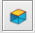

ShowJ¶
Overview¶
ShowJ is the default viewer for Scipion objects, like micrographs,
particles, volumes, classes, etc. Supported formats include: sqlite,
star, vol, stk, mrc, etc. It allows us to display data in gallery or
table mode  and navigate through different
blocks of data. Single images are opened using image window. On the top of
the window we have the menu and toolbar (Fig. 1).
and navigate through different
blocks of data. Single images are opened using image window. On the top of
the window we have the menu and toolbar (Fig. 1).

Fig. 1: ShowJ, Table mode
From the File menu we can display the file information (path, size, date) and open any input file with ImageJ or Chimera if possible. We can also save the file, or save/load a selection of Scipion objects (see Subsets).
From the display menu we can configure the columns order, render and visibility. We can also turn on/off render and select which labels to display with the images. We can also normalize images, flip images vertically, etc. Developer users can configure visualization from the command line.
Tools menu allows us to do some statistics on images, such as processing
Average (AVG) and Standard Deviation (STD), Principal Components
Analysis (PCA) or Fourier Shell Correlation (FSC). It also allows us to
find and/or replace some text or plot some
labels  .
A popup menu appears when the user right-clicks on the table displaying actions
available for the selected item. From this menu we can enable/disable items,
select a range of items, open an image, recalculate CTF, if possible, etc.
Developer users can customize this menu from the command line to add actions
related to the type of data loaded.
.
A popup menu appears when the user right-clicks on the table displaying actions
available for the selected item. From this menu we can enable/disable items,
select a range of items, open an image, recalculate CTF, if possible, etc.
Developer users can customize this menu from the command line to add actions
related to the type of data loaded.

Fig. 2: Ctf tools
Table Mode¶
Table mode displays visible labels of the input objects (Fig. 1) and can display images in text or image formats. For volumes and stacks only the central slice is shown. Input files that contain only one item are displayed as a form. It allows us to order objects asc/desc using mouse click on column header. Also, we can use the plot tool to display one or several columns on a graphic using Plot, Scatter or Histogram modes (the x column is optional).
Column properties are usually specified from the command line (for Scipion objects). In order to modify this configuration we can access columns window from the display menu (Fig. 3).

Fig. 3: Columns Window
Gallery Mode¶
The gallery mode displays the renderable label selected or, in the case of volumes, volume slices, with a combo to iterate over the volumes. It is used, for example, to visualize particles, classes and volume slices. We can change the number of columns and rows and reslice volumes  Reslice allows us to visualize volume slices from: Front, Top, Left, Right and Bottom perspectives.
In Scipion, after a 2D classification, particles have geometry information. We can apply geometry or wrap these images either from the gallery or table modes:

Fig. 4: Gallery mode
Chimera projector lets us visualize and project the selected volume from different angles (Fig. 5).

Fig. 5: Chimera viewer
Image Window¶
Image Window allows us to visualize single images or stacks. It is an extension from ImageJ image processing software. We can navigate over the image holding mouse right click and zoom in/out image using Shift + mouse scroll (Fig. 6 and Fig. 7). Also we can apply filters on image to increase signal to noise ratio.
{kind=link}
Fig. 6: Image Window.

Fig. 7: Stack Window
Image Filters¶
Available filters include Gaussian Blur, Enhance Contrast, Bandpass Filter, Anisotropic Diffusion, Invert LUT, etc (these filters are part of ImageJ) . For more advanced operations we can open ImageJ and process image manually.
Mask GUI¶
Mask GUI allows us to create a mask from an image, and register it as an Scipion object. To draw a mask we can combine different ImageJ selection tools and add or delete regions to selection using Shift and Alt keys respectively. Also from the toolbar we can invert selection or smooth the border. This tool comes handy when we need to create our own masks.

Fig. 8: Design mask tool.
Volume Viewer¶
From the File menu we can use volume viewer to visualize stacks or volumes. This plugin shows stacks as slices, projections or volumes within a 3D-(xyz)-space:

Fig. 9: Volume viewer.
Subsets¶
Using ShowJ we can create Scipion subsets. Subsets are special protocols that register selected/enabled items from a set as an output set. We can create sets of the same type or sets of a different type. For example, we can merge particles from different classes. Different selections tools are available for the user: Select from/to, invert selection, selection using Ctrl and Shift, etc. For large image processing tasks that involve user interaction we can save our selections to restore them later, since Scipion objects cannot be modified. Subsets allow us to dismiss objects from a set without modifying the original set (potentiating project traceability).